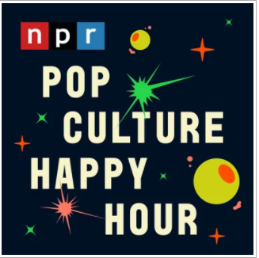

作为苹果官方出品的亲儿子，该应用在界面设计方面已经整合进了系统原生系统，整个界面风格和 iOS 的设计完美同步， 上滑就进入播放界面，下滑就退出，偏爱原生的朋友们应该会比较喜欢。点击搜索栏，然后选择“所有播客”或“您的资料库”， 就可以搜索整个“Apple 播客”目录或仅搜索您的资料库。当找到喜欢的节目时，点击节目前往节目的信息页面，订阅之后， 系统会在新单集发布后自动进行下载，且不会收取任何费用。要关闭 iOS 设备上的自动下载功能， 前往“设置”>“播客”>“下载单集”，然后选取“关闭”。
频道推荐--My favorites
 《NPR:Pop Culture Happy Hour》:每周有五天，流行文化欢乐时光为你提供关于最热门的电影、电视、音乐、书籍、视频游戏等的推荐和评论。加入艺术记者琳达·霍姆斯， 格伦·韦尔登，斯蒂芬·汤普森和艾莎·哈里斯，再加上嘉宾流行文化爱好者的轮换阵容。 《欢乐时光》团队为探索大众对流行音乐的各种反应和看法留出了空间。 从低俗到高雅再到介于两者之间的东西，他们无所不谈。
《贝望录》是一档沙龙聊天类播客节目（Podcast），展现媒体人、行销行业及企业管理者、创意人、创业者在应对当下技术革新与市场变化时的思考和行动， 内容上聚焦观察广告如何影响着社会运行以及人们的日常生活。《贝望录》于2019年荣获苹果播客「年度精选播客」 及「年度最受欢迎新播客」。